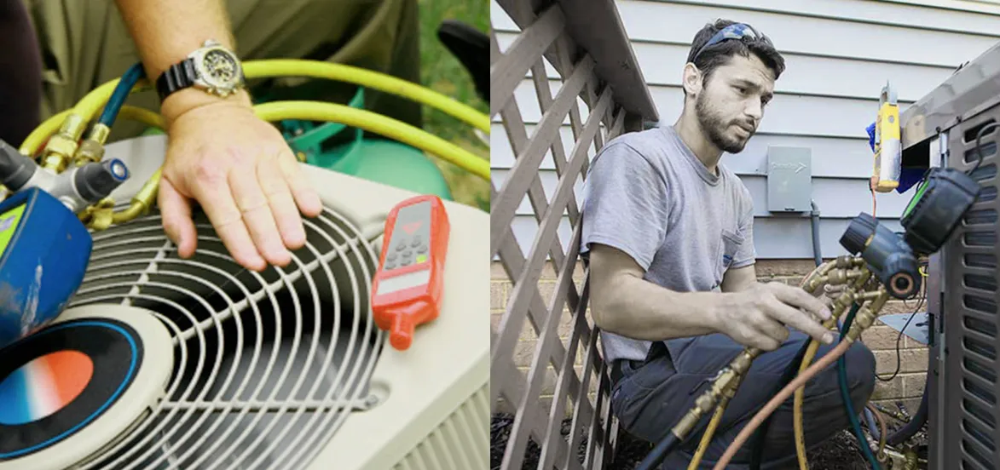

Advantage of Professional Heat Pump Services Over Do-It-Yourself Repairs
Views : 3553

These days with the advent of technology, several new equipment is coming to serve human beings to live comfortable and relaxed life. One such piece of equipment is heat pumps which are exceptional pieces of technology that deliver smiling faces every morning and even day time. However, if you want it to function best, they need proper maintenance and sometimes inspection so that it will work for an extended period of time.
With regards to this, many people think of repairing or installing their heat pumps on their own, which is a huge mistake. The reason is these units are pretty complex and have lines of refrigerant and various other components that only need professional hands. However, it is true that by the do-it-yourself approach, you can save a few dollars. But this step is quite dangerous in terms of personal safety, and it is also against the manufacturer's recommendations.
In short, hiring a professional to repair or install your heat pump is the best approach you will come to know by reading about the benefits of professional heat pump repair services over do-it-yourself. Let's get started:
Top Benefits Of Professional Heat Pump Services
Offer Professional Service
There are many things or appliances in your home that are not suitable for DIYers as something can go wrong. However, this case is also true for heat pumps as it is very complex equipment and has a number of tiny wires that can go wrong. So, if you want to avoid DIY disasters in any form, then hiring professional heat pump services is the best option. The reason is they have lots of experience, skills, and qualifications to do the job and always offer professional work, which will save you money in the long run.
Helps In Increasing Equipment Efficiency
When professional heating contractors repair or install your heat pump, they very well know how to do the job efficiently without any mistakes. However, there are a number of industry tips and tricks which they apply while doing work that works better than amateurs.
Moreover, hiring a professional heat pump repair service will be pretty expensive. But it will save you hard-earned money in the long run, as you need not call technicians for frequent repairs.
It Helps In Reducing Carbon Emissions.
Hiring a professional for heat pump repair in San Diego helps make your system extremely energy efficient. If you take the help of experienced people, they will help you lessen your carbon footprints. In other words, they will cut energy costs by 30-60%.
Offer Longer Life Expectancy.
Heat pumps that are adequately maintained can also work for long as compared to those which are not repaired or installed by a professional. That means, if you call any unprofessional technician for the repair, it will operate the whole season continually and can wear out with time. However, the problem that stops the heat pump from working can shorten the unit's overall lifespan.
Moreover, it also jeopardizes overall comfort and also safety. So, to maximize efficiency, ensure that you go for regular maintenance by a professional to avoid costly repairs and premature replacement.
It Helps In Saving Money.
If you contact a professional for heat pump problems and solutions, it could mean the real difference between a reasonable bill and a small fortune. The reason is that when technicians do the work, they know how every part needs to be repaired or replaced. Apart from that, they also look for various signs that show whether any other part needs replacement or not. So you do not have to face any issues in the future.
In other words, professional heat pump services will save your money in the long run as they will inspect the whole system at once compared to an unprofessional technician who does not know the real issue with the system that demands repair after some time.
Reduces The Chances Of System Failure
When the winter is in top flow, the last thing that can encounter is system failure which needs a technician. Here if you hire an unprofessional person to repair your system, they will further break down the unit as they are not experienced enough to do the satisfactory work.
But if you hire a professional heating contractor, they will lessen the chances of a breakdown even in the middle of the night. There are various key components of heat pumps like blower motors, safety panels, electrical connections, etc. Professionals inspect, repair, and adjust according to the need. So, only rely on professional heat pump repair in San Diego for the best result.
Safety Is Their Priority.
When you hire a professional for heat pump problems and solutions, you will have peace of mind as an expert does your service with perfection. These technicians have the right qualifications, experience, and skills to offer efficient and hassle-free heat pump services. On the other hand, if you hire an unprofessional individual or go for a do-it-yourself approach to do the repair or installation, there are chances of errors and missing any essential thing. So, this can cost you more than the initial, and finally, you have to call a professional technician.
In addition to that, the professionals have safety in their minds while doing work so that the family and the home will be safe from all miss-happenings.
Helps In Increasing Productivity
If your heat pump wears out for some reason, the system will become inefficient and expensive by chance. That means the unit will take extra time to make the home comfortable and relaxed according to the environment. So, if you want a relaxed atmosphere, ensure to hire a professional heat pump repair in San Diego over do-it-yourself repairs.
This step will offer you maximum efficiency, lower the overall energy bills, and does not need to call the technician now and then for the repair.
Long-Term Health
According to experts, a professional heat pump service is recommended every one or two years, depending on the usage. It will help ensure the unit is working correctly. However, if you go for regular servicing, it will help you know various potential issues before they become serious issues. That means the system in the hands of those who have lots of experience and skills can help it run efficiently. Also, it keeps all the risks at bay, thereby ensuring the health and safety of your family members.
Mistakes Of The Do-It-Yourself Approach
When the point is of a heat pump, most people make one mistake, i.e., they think they can repair a minor malfunction yourself as it is a very simple task. They try to fix it, but the issue becomes serious. However, there are indeed a number of DIY videos on the internet that will help you to repair heat pumps, but somehow, they are missing some things that are quite essential. So, don't go for a DIY repair approach; instead, call the professional for heat pump problems and solutions for optimal results.
Things Professional Heat Pump Repair Services Do
- Clean the coils of the heat pump
- Inspect the air vents
- Check the reversing valve
- Thoroughly examine the heat pump filter
- Troubleshoot the thermostat
- Please ensure the heat pump is getting optimum energy by inspecting its various elements.
- Inspect the motor pulley belt
The Bottom Line
After reading about the advantages of professional heat pump repair services, you might get the idea of how essential it is to hire professional heat pump services. However, if you are looking for the best company, EZ Heat and Air comes on top with highly trained and experienced experts. They not only deliver satisfactory work but instead offer free advice to their esteemed customers in regards to how to maintain their heat pump regularly.
Over the years, EZ Heat and Air have built a strong reputation among their customers because of high integrity, quality workmanship, best results, and affordable price. Call us anytime for heat pump repair, maintenance, and installation in San Diego.